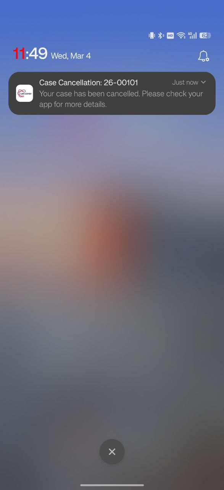
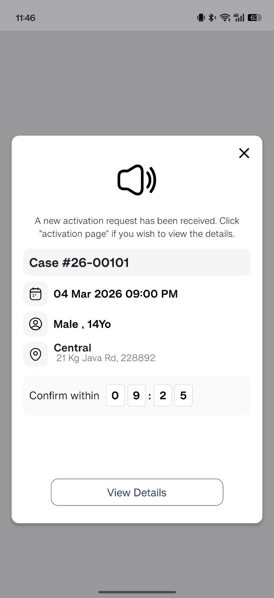
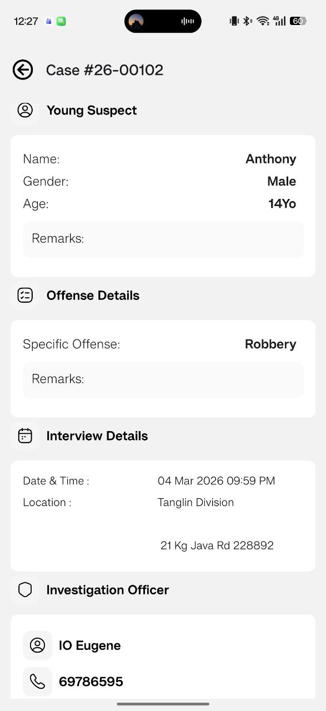

✅ Accept and Confirm Case
This segment covers the complete flow from receiving a case broadcast to confirming of your assignment.
Overview
When a new case is available, this is the sequence of events by stages:
Push Notification sent to AAs → AAs Accept Case via Care Activate App → Algorithm-based Selection → AA is selected → Case Confirmation & Details sent to selected AA
Stage 1: Receive Push Notification
When will Yyou receive a push notification
When a new case is created and you match the relevant criteria for the case, you will receive a New Case Broadcast push notification.
What It Shows
| Information | Description |
|---|---|
| Case ID | Unique case reference number |
| Interview Date/Time | Scheduled interview start time |
| Location | Interview location |
| Youth Information | Basic details such as age and gender |
| Special Requirements | Any requirements such as language or AAYS training qualifications |
| Broadcast Indicator | None (B1), 🟡 (B2), or 🔴 (B3) |
Broadcast Type Indicators
| Indicator | Type | Meaning |
|---|---|---|
| No dot | B1 (Standard) | Primary region with algorithm-based selection and holding period |
| 🟡 Yellow | B2 (Secondary) | Primary and Secondary region, First-Come, First-Serve |
| 🔴 Red | B3 (Staff-only) | Urgent case, all regions, First-Come, First-Serve |
Stage 2: Accept the Case
Step 1: Open the Notification

Tap the push notification to open the app and view full case details.
Step 2: Review Case Details
Before accepting the case, check all the case information:
- Interview time and date
- Location (use the map to check distance)
- Youth details
- Any special requirements

→
Step 3: Accept or Decline
- ✅ Accept: Tap Accept if you are available. For B1, you will be added to the selection pool. For B2/B3, first to accept is moved to confirmation immediately.
- ❌ Decline (no button): There is no Decline button on this broadcast notification. If you cannot support the case, simply close the notification (treated as decline/unavailable) and the case will continue broadcasting to other AAs (no penalty).
Follow along this short video to see how AA receives broadcast notification and accept it
Stage 3: Selection Pool (B1 Only)
What Happens After Accepting a Case?
For B1 broadcasts, after you tap Accept:
- You are added to the AA Selection Pool
- The system maintains a Holding Period (5 - 10 minutes)
- All AAs that have accepted the case during this period are sorted by the algorithm
- After 5 minutes, the system uses weighted selection to choose one AA
🔄 Withdraw Selection Button
While waiting in the Selection Pool:
- You will see a Withdraw Selection button
- Tap this button if your availability changes
- Withdrawing will remove you from the AA selection pool for case confirmation
- There is No penalty for withdrawing your availability before holding period ends (refer to in-app case timer)
Follow along this short video to see how AA withdraw selection
For B2/B3 Broadcasts
- Shorter or no holding period for AA selection
- AAs that accepts B2/B3 cases will likely be assigned the case immediately
- It is not possible for AAs to withdraw their availability for the case once they respond
- Please confirm your availability before responding
Stage 4: Confirm Assignment
When You Receive Confirmation Notification
If you are selected for a case, you will receive an Assignment Confirmation Notification.
Review Full Case Details
Open the notification and review the complete case information:
- Youth Details – Name, age, and relevant information
- IO Contact – Name and contact number
- Location – Full address with quick access to navigation apps
- Interview Time – Scheduled date and time
- Special Requirements – Any specific case requirements
Respond accordingly after reviewing the details
✅ Confirm
- Tap Confirm to accept the assignment
- The case is now officially assigned to you
- You will receive an interview reminder 2 hours before the start of the interview
❌ Decline
- Tap Decline to reject the assignment
- The case will be re-broadcast to other AAs
- ⚠️ Warning: This results in a Low Priority flag for 14 days
- ⚠️ Reminder: If AA decline the case due to valid reasons or conflict of interest, Low Priority Flag will be removed by AAYS Staff
Follow along this short video to see how AA confirm assignment
Low Priority Flag
⚠️ Things to note before declining cases at confirmation stage
If you decline or do not respond to the confirmation message within a fixed timeframe after being selected:
- You wiill receive a Low Priority Flag for 14 days
- Lower chance of being selected during algorithm selection
- This ensures AA's commitment to accepted cases
- ⚠️ Reminder:For AAs with valid reasons such as conflict of interest or unforeseen circumstances, please indicate clearly in remarks
📌 Note: Withdrawing during holding period does NOT result in Low Priority Flag.
Complete Flow Summary
B1 Flow (Standard Broadcast)
1. Receive Push Notification (B1)
↓
2. Tap Accept
↓
3. Added to Selection Pool
↓
4. Wait during Holding Period (5 mins)
→ Can tap "Withdraw Selection" if needed (no penalty)
↓
5. System selects one AA (weighted selection)
↓
6. If selected → Receive Confirmation Notification
↓
7. Confirm within 5 minutes
↓
8. Case officially assigned to you!
B2/B3 Flow (FCFS)
1. Receive Push Notification (🟡 or 🔴)
↓
2. Tap Accept (first to accept wins)
↓
3. Immediately receive Confirmation Notification
↓
4. Confirm within 5 minutes
↓
5. Case officially assigned to you!
After Confirmation
Once you're confirmed for the assignment:
- Interview Reminder: You will receive a reminder 2 hours before the scheduled interview via push notifications
- View Details: Go to My Assignments to view case details anytime
- Contact IO: You can contact the IO directly using the provided phone number in the case details
Troubleshooting
Didn't receive broadcast notification:
- Check phone notification settings are enabled
- Check if you're in Quiet Hours or pause mode
- Verify your region and timing preferences match
Didn't receive confirmation notification:
- Check your phone's notification settings
- Check if you're in Quiet Hours mode
- You may not have been selected (B1)